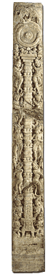
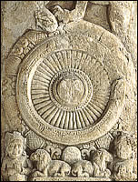

PilasterA pilaster is a type of column placed between stone panels. This pilaster is decorated with symbols and objects representing the Buddha's First Sermon. After achieving Enlightenment, the Buddha gave a sermon at the Deer Park. In this First Sermon the Buddha set the Wheel of the Law in motion. At the top of the pilaster is the Wheel of the Law which is called the dharmachakra. The dharmachakra sits upon a tall pillar. At the base of the pillar is an empty throne with a footstool. This is a symbol of the Buddha. Why doesn't the Buddha appear as a man? |